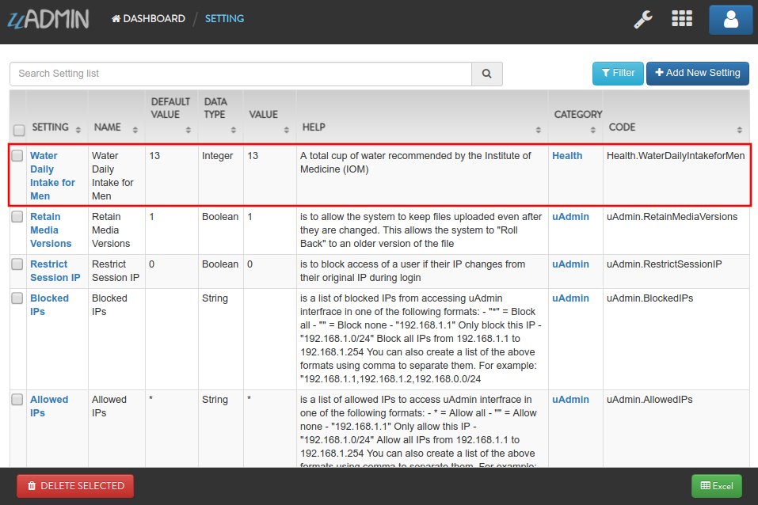
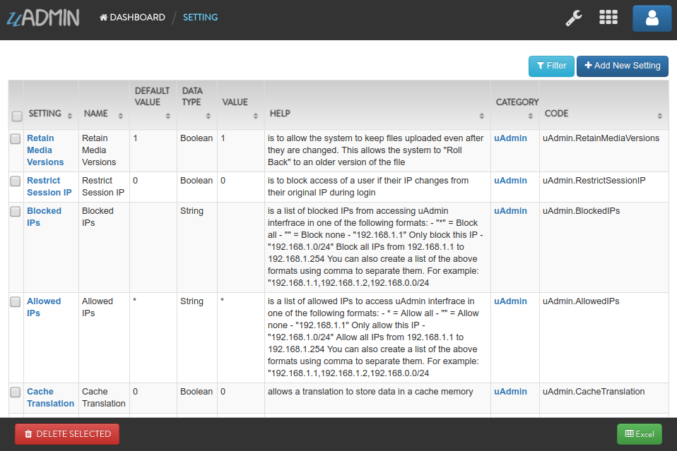

uadmin.Setting¶
Back to Setting Functions Page
Setting is a system in uAdmin that is used to display information for an application as a whole.
Structure:
type Setting struct {
Model
Name string
DefaultValue string
DataType DataType
Value string
Help string
Category SettingCategory `uadmin:"required"`
CategoryID uint
Code string `uadmin:"read_only"`
}
Data Type has 7 Data Type:
Boolean - A data type that has one of two possible values (usually denoted true and false), intended to represent the two truth values of logic and Boolean algebra
DateTime - Provides functionality for measuring and displaying time
File - A data type used in order to upload a file in the database
Float - Used in various programming languages to define a variable with a fractional value
Image - Used to upload and crop an image in the database
Integer - Used to represent a whole number that ranges from -2147483647 to 2147483647 for 9 or 10 digits of precision
String - Used to represent text rather than numbers
There are 5 functions that you can use in Setting:
ApplyValue() - Applies the assigned value based on filter
GetValue() - Fetch the first value from the record
HideInDashboarder() - Return true and auto hide this from setting
ParseFormValue - Parses a boolean and date time string values to its standard format
func(v []string)
Go to Example #4: ParseFormValue function to see how ParseFormValue works.
Save() - Saves the object in the database
There are 2 ways you can do for initialization process using this function: one-by-one and by group.
One-by-one initialization:
func main(){
// Some codes
settingCategory := uadmin.SettingCategory{}
setting := uadmin.Setting{}
setting.Category = settingCategory
setting.CategoryID = 1
setting.Code = "Code"
setting.DataType = uadmin.DataType(0).String(),
setting.DefaultValue = "Default Setting Value"
setting.Help = "Help"
setting.Name = "Setting Name"
setting.Value = "Setting Value"
}
By group initialization:
func main(){
// Some codes
settingCategory := uadmin.SettingCategory{}
setting := uadmin.Setting{
Category: settingCategory,
CategoryID: 1,
Code: "Code",
DataType: uadmin.DataType(0).String(),
DefaultValue: "Default Setting Value",
Help: "Help",
Name: "Setting Name",
Value: "Setting Value",
}
}
In the following examples, we will use “by group” initialization process.
uadmin.Setting Examples¶
Example #1: Assigning values in Setting fields¶
Suppose you have a Health record in Setting Category system model that has an ID of 2.

Go to main.go and apply the following codes below to create a Setting that has a record of “Water Daily Intake for Men”:
func main(){
// Some codes
// Setting configuration that assigns setting field values
setting := uadmin.Setting{
CategoryID: 2, // Health
Code: "Health.WaterDailyIntakeforMen",
DataType: uadmin.DataType(0).Integer(),
DefaultValue: "13",
Help: "A total cup of water recommended by the Institute of Medicine (IOM)",
Name: "Water Daily Intake for Men",
Value: "13",
}
// Save setting in the database
setting.Save()
}
Now run your application. From uAdmin dashboard, click on “SETTINGS”.

As a result, the record “Water Daily Intake for Men” was saved in the database. Now go to Settings page by clicking on the wrench icon on the top right part to see the result.
Result

Example #2: ApplyValue function¶
Example:
func main() {
// Some codes
// Initialize the Setting model
settings := uadmin.Setting{}
// Some business logic here
// Apply the value assigned in the specified record
settings.ApplyValue()
}
Example #3: GetValue function¶
Suppose you have built-in records containing uAdmin functions in the Setting model.
Go to the main.go and let’s get all the values of the built-in setting records.
func main() {
// Some codes
// Initialize the Setting model
settings := []uadmin.Setting{}
// Fetch all records
uadmin.All(&settings)
// Print the value of each built-in setting records
for s := range settings {
uadmin.Trail(uadmin.DEBUG, settings[s].Name+": %v", settings[s].GetValue())
}
}
Run your application and check the result in your terminal.
[ DEBUG ] Theme: default
[ DEBUG ] Site Name: Todo List
[ DEBUG ] Reporting Level: 0
[ DEBUG ] Report Time Stamp: false
[ DEBUG ] Debug DB: false
[ DEBUG ] Page Length: 100
[ DEBUG ] Max Image Height: 600
[ DEBUG ] Max Image Width: 800
[ DEBUG ] Max Upload File Size: 26214400
[ DEBUG ] Port: 8000
[ DEBUG ] Email From:
[ DEBUG ] Email Username:
[ DEBUG ] Email Password:
[ DEBUG ] Email SMTP Server:
[ DEBUG ] Email SMTP Server Port: 0
[ DEBUG ] Root URL: /admin/
[ DEBUG ] OTP Algorithm: sha1
[ DEBUG ] OTP Digits: 6
[ DEBUG ] OTP Period: 30
[ DEBUG ] OTP Skew: 5
[ DEBUG ] Public Media: false
[ DEBUG ] Log Delete: true
[ DEBUG ] Log Add: true
[ DEBUG ] Log Edit: true
[ DEBUG ] Log Read: false
[ DEBUG ] Cache Translation: false
[ DEBUG ] Allowed IPs: *
[ DEBUG ] Blocked IPs:
[ DEBUG ] Restrict Session IP: false
[ DEBUG ] Retain Media Versions: true
Example #4: ParseFormValue function¶
Date Time
Suppose you have this record as shown below that has an ID of 1:

Go to main.go and apply the following codes below after the Register and before StartServer sections.
func main(){
// Some codes
// Initialize the Setting model from uAdmin
setting := uadmin.Setting{}
// Get the first record in Setting model
uadmin.Get(&setting, "id = 1")
// Parse assigned Date Time value to its standard format
setting.ParseFormValue([]string{"2020-03-28 20:30"})
// Save the setting record
setting.Save()
}
Now run your application. From uAdmin dashboard, click on “SETTINGS”.
As expected, the Date Time value has parsed to its standard format where :00 was appended in the value.

Boolean
Suppose you have this record as shown below that has an ID of 1:

Go to main.go and apply the following codes below after the Register and before StartServer sections.
func main(){
// Some codes
// Initialize the Setting model from uAdmin
setting := uadmin.Setting{}
// Get the first record in Setting model
uadmin.Get(&setting, "id = 1")
// Parse assigned Boolean value to its standard format
setting.ParseFormValue([]string{"on"})
// Save the setting record
setting.Save()
}
Now run your application. From uAdmin dashboard, click on “SETTINGS”.
As expected, the Boolean value has parsed to its standard format that prints 1. 1 means true in boolean.

If you click on the wrench icon, the Earth Hour status is Active in the Settings page.